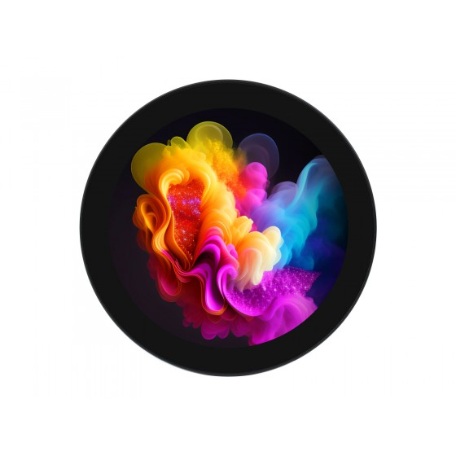
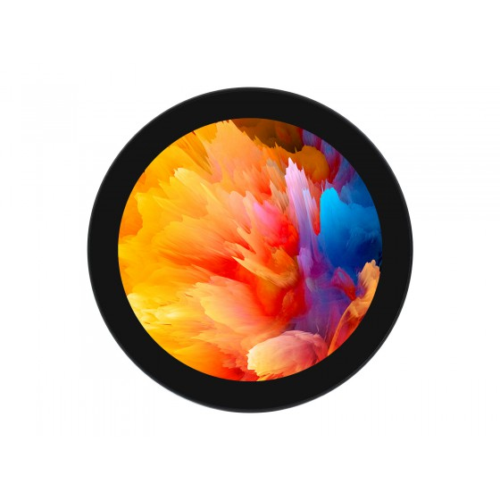
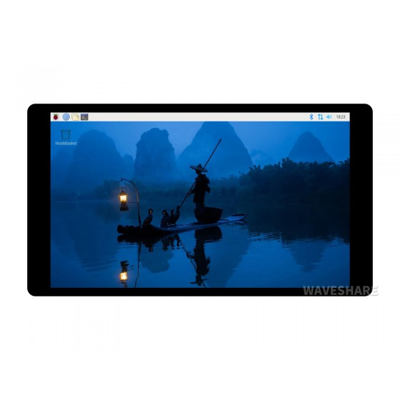
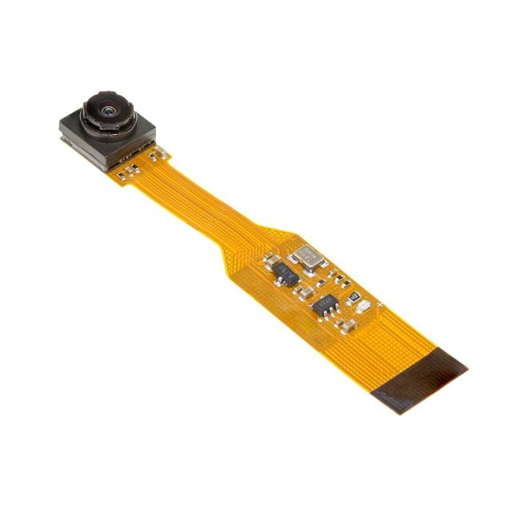
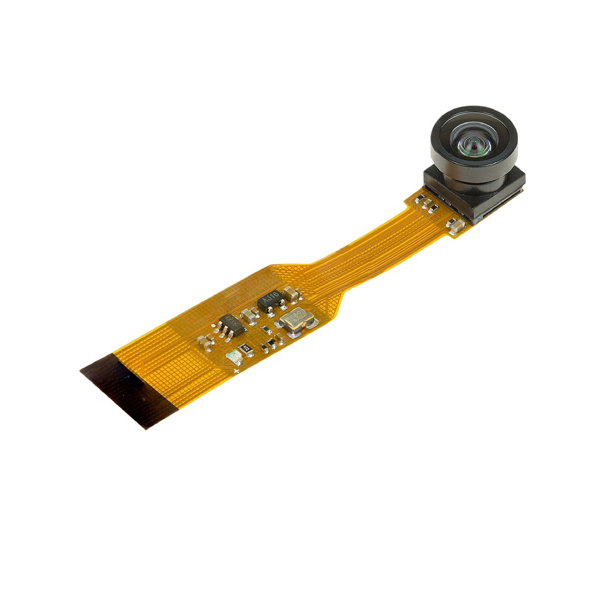

01形态与布局
- 桌面摆放为主——运动中远距反馈以语音为主，屏幕承担状态表情与近场交互；不再假设 1.5–3m 读大数字。
- 60×90mm 是硬包络——所有器件选型先过尺寸关：屏模组 ≤48mm 外形档、4G 模组 17.7×15.8mm、摄像头模组厚度都在挤同一空间。
- 摄像头是最大未定项——位置按 ID 已定（顶部滑盖槽，物理滑盖遮挡镜头）；待定义的是它是否承担全身动作识别。若转近场交互，摄像头指标可大幅放宽。
- 布局推导整体重做——落地路线的光心高度、俯仰角、FOV 台架矩阵作废；9/23 的推演方法可复用。
02屏幕选型
| 指标 | 1.8″ 市场主流（09-24 核验） | 说明 / 边界 |
|---|---|---|
| 形状尺寸 | 1.8″ 圆形 IPS | 全视角；与掌心形态、角色脸方向一致 |
| 分辨率 | 360×360 (RGB) | 驱动 IC 主流 ST77916；UI 按大数字、单任务设计 |
| 有效显示区 | 约 45.7×45.7 mm | 模组外形两档：约 48×50×2mm（超薄）/ 61×61×3.7mm |
| 亮度 | 320–380 cd/m² | 室内近场够用；具体以厂商规格书为准 |
| 接口 | QSPI / MIPI 1-lane | RV1106B 对 QSPI 圆屏原生支持（BodyPark 同路线），集成难度低于 4″ MIPI 方案 |
| 触控 | 电容触控可选 | TP IC 如 CST18858；是否上触控待近场交互定义后定 |
- 硬包络约束——61mm 级模组放不进 60mm 宽机身：选型锁定 ≤48mm 外形档或定制缩边框。
- 待专项验证——儿童指尖触控目标尺寸、0.5/1/1.5m 近场可读性、360×360 下表情动效流畅度。
对照：落地路线的 4″ 验证件（已降级，不再采购推荐）



图为厂商官网白底图。这三件按 9/23 落地路线推荐；掌心路线下仅作规格对照，不再进入采购清单。
03摄像头选型


| 候选 | 定位 | 关键边界 |
|---|---|---|
| Arducam B006604 · 120° | 保守基线，验证视场与识别基线 | 畸变易控；FOV 口径以 RFQ 实测 H/V/D 为准 |
| Arducam B006605 · 160° | 近距覆盖上限对照 | Wiki 实标约 128°(H)×96°(V)——"160°"是对角宣传值 |
| e-con IMX568 全局快门 | 动作模糊高规格对照（可选） | 成本高，仅在滚筒快门实测不过关时进入下一轮 |
- 传感器口径沿用——5MP + 有效视场（非标称对角）的选型逻辑与机身形态无关，继续成立。
- 布局推导作废——落地路线的光心 195–210mm、上仰 12–18°、台架矩阵不适用；须先回答三问：设备放哪？识别是否仍由本体摄像头承担？小机身视锥如何覆盖动作？
图为厂商官方商城白底图（B006605 原产品页已迁移至官方博客与官方商城 UCTRONICS，RFQ 前应再次确认链接）。RFQ 必须索要：驱动与 ISP IQ 文件、去畸变后的有效 H/V/D FOV 与畸变曲线、暗光指标、儿童运动样张。
04联网方案
4G 负责开箱即用，Wi-Fi 负责可选降本。Cat.1 bis 10/5 Mbps 等级对短语音、TTS、文本请求与 OTA 已充足；不为"未来传视频"上更重的蜂窝方案。
| 模组（EVT 打样比较） | 尺寸 mm | 设计含义 |
|---|---|---|
| 移远 EC800G-CN | 17.7×15.8×2.4 | 三网入库与强制认证齐全，优先 RFQ |
| 合宙 Air780E | 约17.7×15.8×2.3 | 开发生态直接，适合低成本快速验证 |
| 芯讯通 A7670C | 24×24×2.3 | 封装更大，作第二来源 |
- 电源更紧——射频发射 1.5–2A 百微秒脉冲，60×90mm 内需独立 3.8V 电源轨 + 储能电容，与电池容量、厚度互相制约。
- 天线与 EMI——主天线净空、摄像头/屏线/功放隔离在小体积内更难，需整机 OTA 验证。
- 卡形态与合规——EVT 卡座；量产倾向 MFF2 + eUICC；物联网卡实名登记（反电诈法第十二条），流程含家长实名、IMEI/ICCID 绑定、停复机。
- 流量——语音走 Opus 短片段（约 54 MB/月量级）；不上传持续环境音与运动视频；按 0.5–1 GB/月询价，4 周实测定档。
05下一步
- 出路线变更单V1.2 Gate 与 9/23 屏幕选型研究标注「掌心路线为主」，落地推导归档为对照。
- 掌心形态专项推演厚度、电池、摄像头布局与视锥、声学、散热、配重一次做完（9/23 推演方法可复用）。
- 采购验证组合1.8″ 360×360 样屏（≤48mm 外形、带触控）+ B006604/B006605 + EC800G-CN/Air780E 两套 4G 小板。
- 上台架0.5/1/1.5m 近场屏可读性；摄像头布局几何重推后重做 FOV 实验。